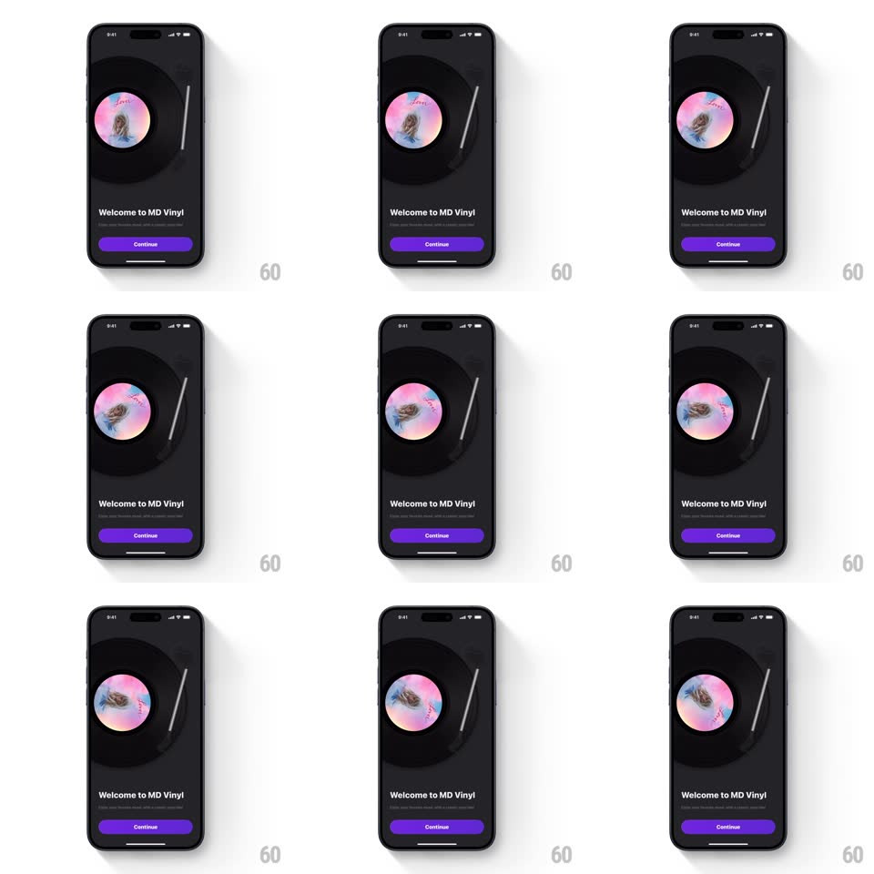

Media
Frame-by-frame

Rebuild this interaction 1:1: MD Vinyl's intro - on a dark onboarding screen, a skeuomorphic vinyl record with a colorful album-art label spins continuously at turntable speed above the "Welcome to MD Vinyl" headline and purple Continue button, with a tonearm resting beside the platter.

Rebuild this interaction 1:1: MD Vinyl's intro - on a dark onboarding screen, a skeuomorphic vinyl record with a colorful album-art label spins continuously at turntable speed above the "Welcome to MD Vinyl" headline and purple Continue button, with a tonearm resting beside the platter. ## Integration Integration: stack-agnostic spec - springs given as stiffness/damping, timed motions as duration + curve; map every value to your framework and animation library of choice. ## Scene Dark screen: large vinyl record dominating the top half - black disc with light-catching grooves and a vivid pink/orange/blue album label at center - a slim silver tonearm angled at its right edge, then the welcome headline, subline, and a full-width purple Continue pill. ## Motion spec Pattern: continuous vinyl spin. - The record rotates at a steady 33 1/3 RPM feel (one revolution ~1.8s, perfectly linear, no easing). - A specular highlight sweeps the grooves as the disc turns - a soft light band rotating with the disc (slightly offset from the label rotation for realism). - The label artwork rotates with the disc exactly (same angular velocity, fixed center). - The tonearm sits parked off the record, with a barely perceptible idle sway (+/-0.5deg, 4s loop). - Entry: the disc fades in already spinning (opacity 0 -> 1, 400ms) - it never ramps up from stopped on this screen. ## Calibration - The spin is metronomic - any easing or wobble breaks the turntable illusion. - Groove texture is concentric and catches the light band - the disc reads as vinyl, not a black circle. ## Reduced motion Static disc with the highlight fixed at a pleasing angle. ## Don't miss - The label is real album art, spinning off-kilter text and all - the asymmetry proves the rotation. - The tonearm never touches the record on the intro screen - the music is implied, not playing.